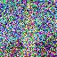
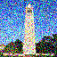
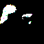

For Part 0, I explored the DeepFloyd IF text-to-image model using three custom prompts.
Stage 1 generates low-resolution (64×64) images, and Stage 2 upsamples them to
256×256 for higher quality.
Prompts
Prompt 1: a king and a queen on top of the world
Prompt 2: a rat cooking ratatouille in a detailed kitchen
Prompt 3: a mouse holding a tiny umbrella
I used a fixed random seed for all images so the results are reproducible.
Random seed: SEED_HERE
Stage 1 Outputs (64×64)
Prompt: a king and a queen on top of the world
Stage 1 (64×64) – rough silhouettes and colors, but composition is visible.
Prompt: a rat cooking ratatouille in a detailed kitchen
Stage 1 (64×64) – the rat + pot are recognizable but very blurry.
Prompt: a mouse holding a tiny umbrella
Stage 1 (64×64) – basic mouse + umbrella shapes with coarse colors.
Stage 2 Outputs (256×256)
Prompt: a king and a queen on top of the world
Stage 2 (256×256) – much sharper details and lighting; characters and background
are clearly defined.
Prompt: a rat cooking ratatouille in a detailed kitchen
Stage 2 (256×256) – the rat, pot, and kitchen props become crisp and cartoon-like.
Prompt: a mouse holding a tiny umbrella
Stage 2 (256×256) – very clear mouse character with a colorful umbrella and bokeh background.
Observations
Stage 1 roughly captures the global structure and colors but is extremely blurry.
Stage 2 preserves that structure while adding sharp edges, textures, and small details.
Across different prompts, the model consistently understands the main objects and scene
layout, but sometimes makes stylistic choices (e.g., cartoon vs. realistic) that aren't
explicitly specified in the text.
Part 1 — Sampling and Denoising
1.1 Forward Process: Adding Noise
In this part I implemented the forward diffusion process
noisy_im = forward(im, t), which gradually corrupts a clean image
by adding Gaussian noise controlled by a schedule ā_t.
The Campanile image below shows what the same picture looks like at different
noise levels.
Original CampanileNoisy at t = 250Noisy at t = 500Noisy at t = 750
As t increases the signal slowly disappears and the image approaches pure noise.
This is the process that the denoising model will later have to invert.
1.2 Classical Denoising: Gaussian Blur
Before using any learned model, I tried a purely classical baseline:
Gaussian blur. I blurred the noisy Campanile images at different timesteps
and compared them side-by-side with the input noise.
Noisy t = 250Gaussian blur (t = 250)Noisy t = 500Gaussian blur (t = 500)

Noisy t = 750Gaussian blur (t = 750)
Blur can smooth out some grainy noise, but it also destroys edges and structure.
It never actually recovers the original image, which is why we need
a learned denoiser.
1.3 One-Step Denoising with a Pretrained UNet
Next I used the Stage-1 DeepFloyd IF UNet (stage_1.unet) as a
learned denoiser. For each timestep, the UNet predicts the noise
ε̂; I then reconstruct an estimate of the clean image
x̂₀ in a single reverse step.
Original Campanile

Noisy t = 250One-step denoise (t = 250)Noisy t = 500One-step denoise (t = 500)Noisy t = 750One-step denoise (t = 750)
Even a single reverse step with the UNet is already much sharper than Gaussian blur,
but fine details are still missing and the result is not perfectly faithful to
the original. This motivates using the full multi-step reverse process.
1.4 Iterative Denoising (DDPM Reverse Process)
Here I implemented an iterative DDPM-style reverse process over a
strided schedule of timesteps
(e.g., 990, 960, …, 0). At each step I:
Use the UNet to predict noise and variance.
Estimate x̂₀ from the current x_t.
Compute the next, less noisy image x_{t'} using the closed-form DDPM update.
Add the appropriate stochastic variance term.
Starting from a moderately noisy Campanile (t = 690), I compared:
The iterative method produces a much cleaner and more coherent reconstruction
than either the one-step estimate or Gaussian blur. The intermediate steps
(14_iterative_step_*.png) show the tower slowly emerging from noise.
1.5 Sampling: Generating Images from Pure Noise
Once the iterative reverse process worked on real images, I turned it into a
generator. I started from pure Gaussian noise
x_T ~ N(0, I) and ran the same denoising loop all the way to t = 0
(with the prompt "a high quality photo").
This produces completely new images drawn from the model’s learned distribution.

Sample 1Sample 2Sample 3Sample 4Sample 5
Because this Stage-1 model operates at low resolution and is later upsampled by
Stage-2, these samples look like abstract, low-frequency silhouettes and
landscapes, but they are generated purely from noise.
1.6 Classifier-Free Guidance (CFG)
The basic samples above are often blurry or off prompt. To steer the generation
more strongly toward a text prompt, I implemented
classifier-free guidance (CFG).
The idea is to run the UNet twice:
once with the conditional prompt embedding (p_c)
once with an unconditional embedding (p_u, the empty prompt)
The two predicted noises εc, εu
are combined as:
ε = εu + γ (εc - εu)
where γ = 7 controls guidance strength.
I plugged this guided noise estimate into the same iterative sampler as before.
With CFG, the images become much sharper and more aligned with the text
"a high quality photo".
Compared to the unguided samples in Part 1.5, classifier-free guidance produces
images with stronger structure, contrast, and recognizable silhouettes,
showing how much control a simple guidance trick can add to diffusion sampling.